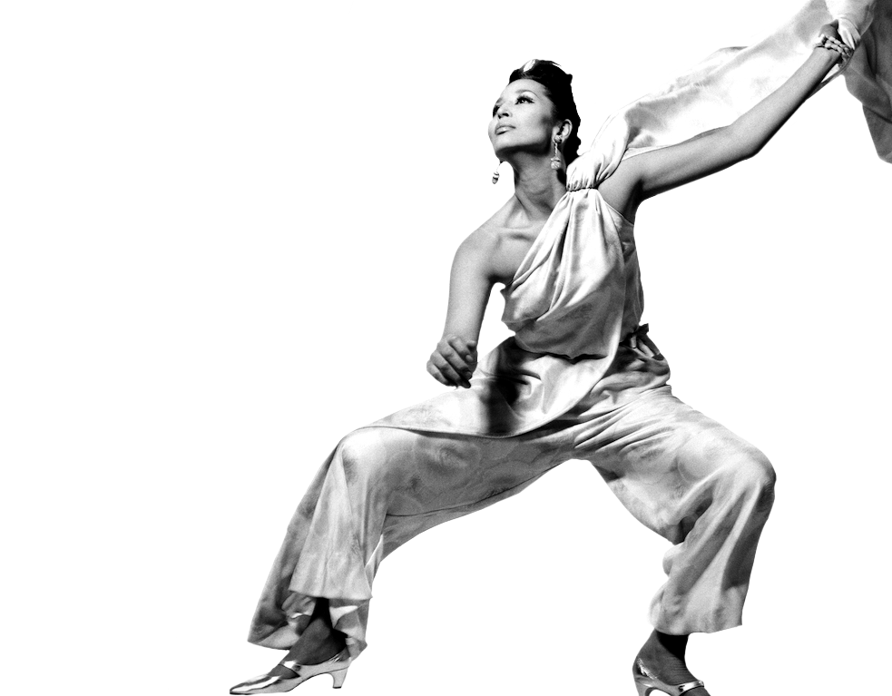
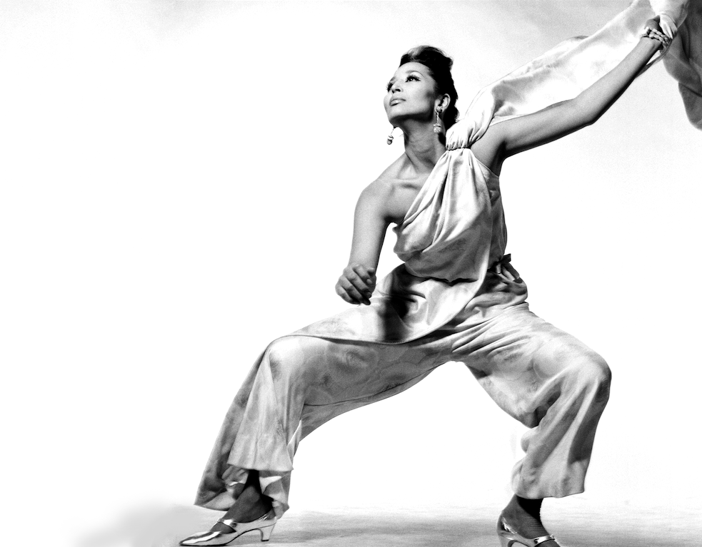
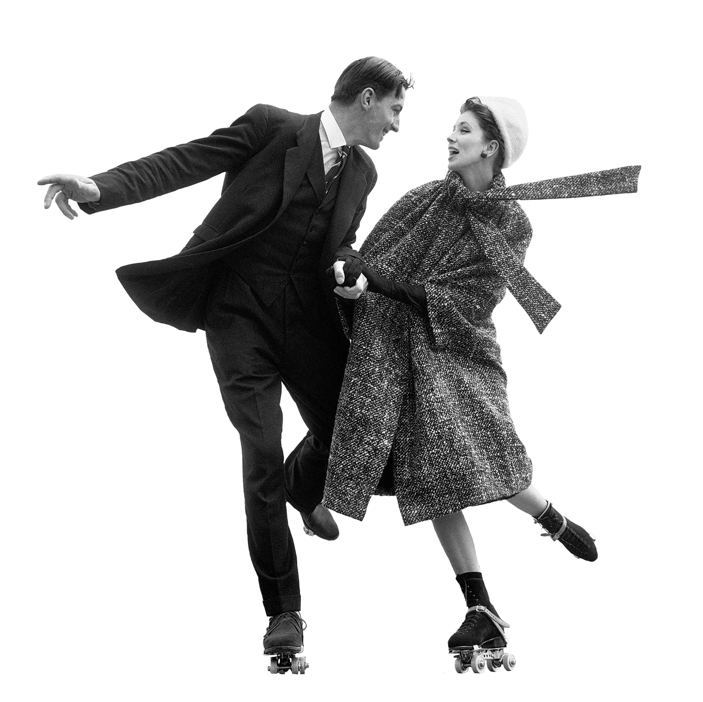
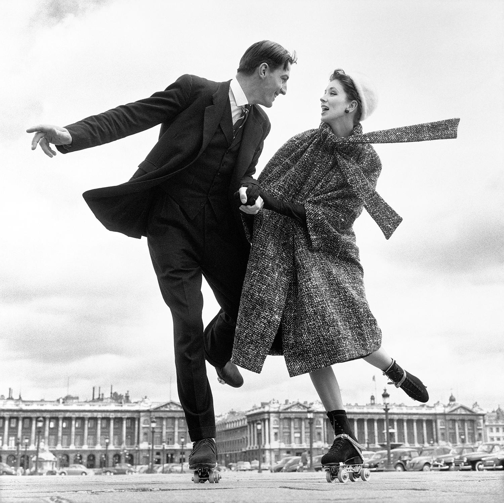

This is what fashion photography was before Avedon.


Movement,
Intimacy,
Space,
and Form
is what Avedon brought into fashion photography.
Avedon introduced new life into fashion photography.


These images were chosen as the ones to best showcase the animation in his photos. Their blackened sillohuettes are meant to abstract and highlight how powerful the forms of the models are.